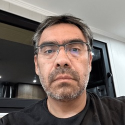

Curriculum Vitae

Mauricio Andrés Ortega Solís
Perfil Profesional
Ingeniero informático con 20 años de experiencia, 10 de ellos centrados en la dirección de proyectos. Me especializo en la planificación, realización, control económico y monitorización de proyectos IT. Por 15 años he trabajado en empresas multinacionales obteniendo un promedio del 90 % de satisfacción en los clientes.
Datos Personales
- Nombre: Mauricio Andrés Ortega Solís
- Lugar de Nacimiento: Santiago, Chile
- Fecha de Ncimiento: 21 de enero de 1978
Experiencia
Jefe de Proyectos
Walmart Chile Noviembre 2010 al Presente
- Diseñar, implementar y gestionar proyectos de desarrollo interno y externos.
- Realizar seguimiento a los proyectos.
- Gestionar a equipos formados especialistas en informática.
Analista Programador
Brave noviembre 2003 al noviembre 2010
- Diseñar y desarrollo modulos en PLEX.
- Realizar pruebas unitarias y de integración.
- Documentar desarrollos.
Habilidades Profesionales
- Conocimiento en lenguajes de programación C y JAVA.
- Uso de aplicaciones Cloud.
- Gestión de proyectos.
- Gestión de presupuesto.
- Toma de decisiones.
- Coordinación de equipos de trabajo.
Referencía
Ver Portafolio